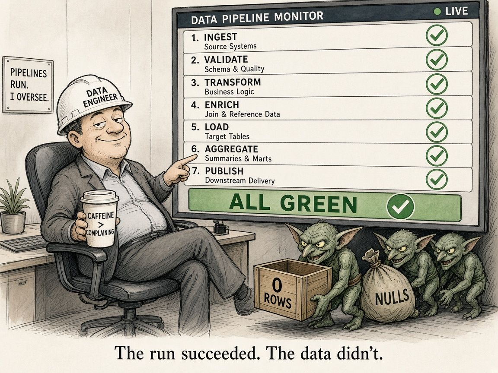

A Green Run Is Not a Clean Dataset
There’s a particular kind of calm that settles in when every task in the DAG turns green. Inbox clear. Nightly job done. You can close the laptop.
I’ve learned not to trust that calm on its own.
A green run means the orchestration finished without throwing. It does not mean the right rows landed, in the right shape, at the right time. Empty files still “succeed.” A renamed source column can coerce to nulls without failing the SQL. A duplicate key can sail through if nobody asked for uniqueness. The scheduler is happy. Your dashboard is quietly wrong.

So I treat the green tick as “the engine ran,” not “the data is fine.” After the job, I want a short checklist that behaves more like a reconciliation than a status light:
- Row count: against yesterday, and against a floor that would be absurd to miss on a normal day.
- Freshness: the newest event timestamp in the table, not the time the job finished.
- Null rate on the columns that matter: not every column, just the ones a model, report or join actually depends on.
- Uniqueness on the keys you claim are unique: if the grain is one row per game per player, prove it.
None of that is glamorous. It’s the data-engineering version of tying out a control total before you sign off a pack. The report can open and still not balance. Same idea here.
Schema drift is the sneaky cousin. Upstream adds a field, renames one, or changes a type. Your select * still runs. Your typed load soft-fails into nulls. Downstream features shift. Nobody gets paged because nothing “failed.”
What helps in practice:
- Write the expectation before the run: expected grain, expected volume band, max null rate.
- Fail the data checks even when the task exit code is zero, or at least split alerts into warn and fail tiers so you don’t go numb to noise.
- Log the checks beside the run, so “green” in the UI always sits next to rows, freshness, nulls and keys.
- When something looks off, ask “did anything land?” before you rewrite the model or the prompt.
More recently, outside my day role, I’ve been spending more time on data science and AI engineering projects, and this habit carries over. Models and LLM evals inherit whatever the pipeline quietly accepted. If the table is wrong, the score is theatre.
Green is necessary. It just isn’t sufficient.